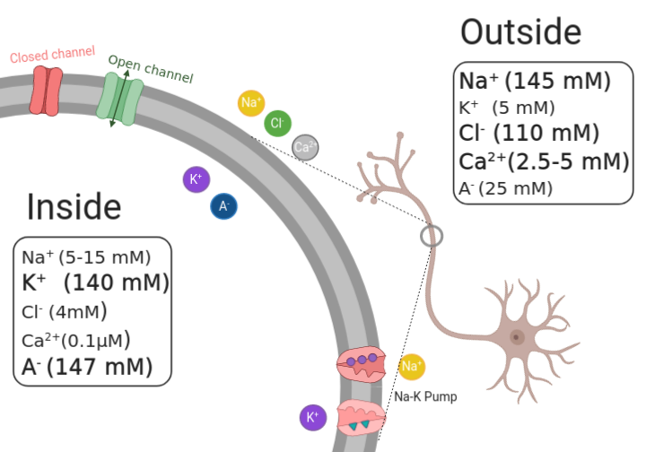
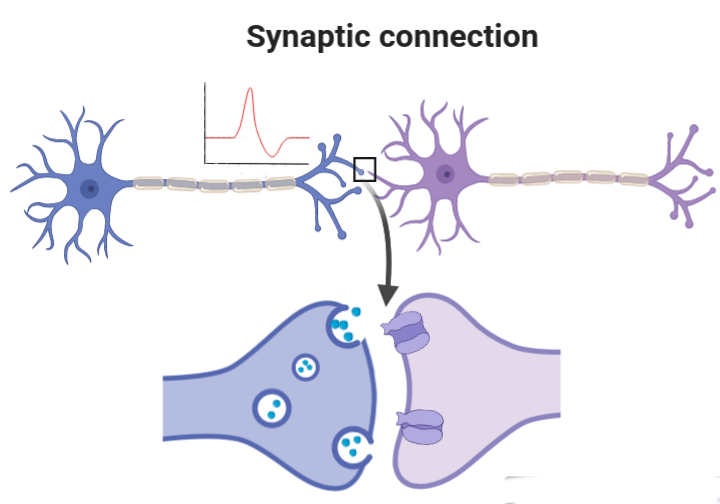
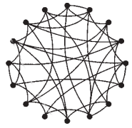
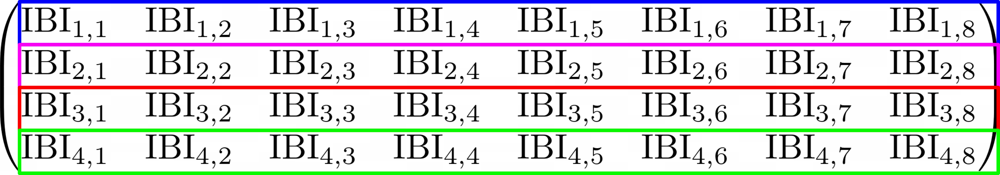
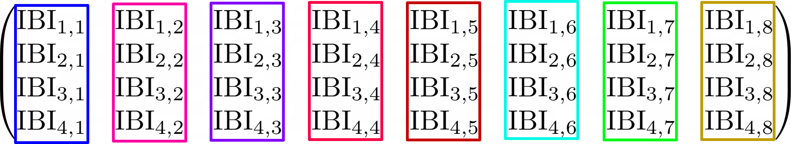
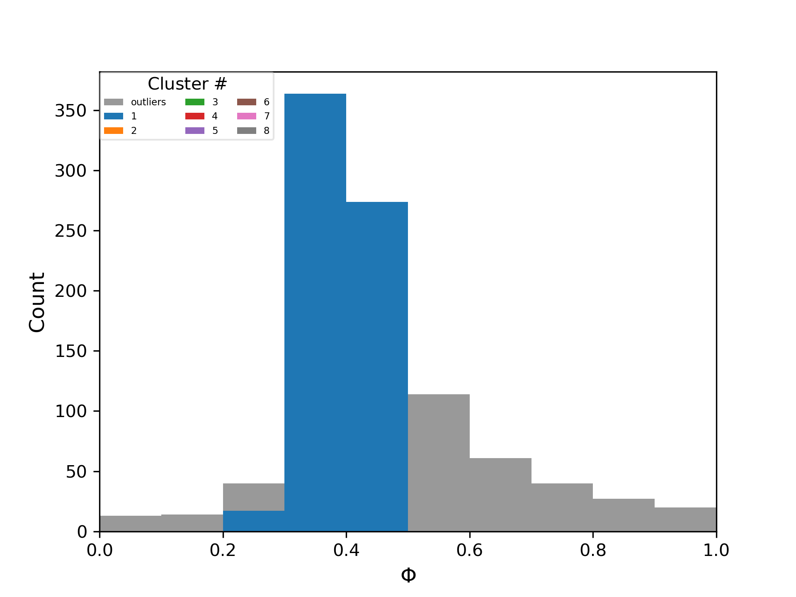

Sincronização de fase e metastabilidade em redes neurais
Pré-defesa de Mestrado
UFPR
Introdução
Sobre o que vou falar
Rede de neurônios com bursts
Comportamento, sincronização de fase
Estudo de metastabilidade em neurociência
Outline
Introdução
Metodologia
Resultados, discussões
Conclusões
Motivação - Sincronização de fase
Fase: variável para indicar o status atual de uma oscilação.
Sincronização: atividade ocorrendo simultâneamente
Sincronização de fase
Crucial para:
Memória (Fell, 2011)
Consciência (Gaillard, 2009)
Percepção (Rodriguez, 2019)
Sincronização de fase
Disrupção associada a (Uhlhaas, 2006)
Epilepsia
Parkinson
Autismo
Mecanismos teóricos
Communication-through-coherence (Fries, 2005)
Binding-by-synchrony (Singer, 1999)
Motivação - Metastabilidade
Regime em que os padroes de atividade de um sistema variam incessantemente
Tirado de (Ma, 2016)
Metastabilidade
Metastabilidade constitui a base para a dinâmica da atividade cortical (Bressler, 2016)
Sequência de estados cerebrais representa o fluxo de pensamento (stream of thoughts) (Fingelkurts, 2008)
Metodologia
Redes neurais
Uma rede neural possui três ingredientes básicosNeurônio
Sinapse
Topologia
Neurônio

Tirado de (Brown, 1999)
Neurônio

Tirado de https://commons.wikimedia.org/wiki/File:Action_Potential.gif
Neurônio
Modelagem
Equações de Hodgkin-Huxley
\[\begin{align} C_\mathrm{M} \dot{V} &= I - \overline{g}_{\mathrm{K}} n^4(V-E_{\mathrm{K}}) - \overline{g}_{\mathrm{Na}} m^3 h (V- E_{\mathrm{Na}}) - g_{\mathrm{L}} (V - E_{\mathrm{L}})\\ \dot{n} &= \alpha_n(V) (1-n) - n\beta_n(V) \\ \dot{m} &= \alpha_m(V)(1-m) - m\beta_m(V) \\ \dot{h} &= \alpha_h(V)(1-h) - h\beta_h(V) \end{align}\]Modelo de Huber-Braun
\[\begin{align}C_\mathrm{M} \frac{dV_i(t)}{dt} &= -I_{\mathrm{d}} - I_{\mathrm{r}} - I_{\mathrm{l}} - I_{\mathrm{sd}} - I_{\mathrm{sr}} - I_{\mathrm{ext}}\\ \end{align}\]Tempos de disparo

Influência da temperatura
\[\begin{align} \phi &= \phi_0^{(T-T_0)/\overline{T}_0} \\ \rho &= \rho_0^{(T-T_0)/\overline{T}_0} \end{align}\]Sinapse
Topologia aleatória
Figura adaptada de Watts-Strogatz
Resumo da rede
Neurônios bursting
Sinapses químicas
Topologia aleatória
Medida de sincronização de fase
Definição de fase
\[\theta_{i}(t) = 2\pi k_i + 2\pi \frac{t - t_{k,i}}{t_{k+1, i} - t_{k,i}}, \; (t_k < t < t_{k+1}) \]Parâmetro de ordem de Kuramoto
\[ R(t) = \frac{1}{N}\left|\sum\limits_{i=1}^N e^{j\theta_i(t)}\right| \]\[R(t) = 1\] -> Sincronização de fase completa
\[R(t) = 0\] -> Desincronização de fase
Variabilidades
Um neurônio
Rede
Temporal
Ensemble
Drift médio
Drift médio
\[\Delta\] mede quanto, em média, os tempos de disparo relativos mudam com o tempo.\[\Delta = 0\] -> Neurônios estão phase-locked
\[\Delta >0 \] -> Tempos relativos estão mudando
Análise de clustering
Agrupa neurônios com fases semelhantes
Como calcular os clusters
Calcula diferença entre fases do cluster e fase dos neurônios fora.
Colocar no cluster os neurônios com diferença de fase abaixo de um limiar \[\Phi_\mathrm{th}\]
$\Phi_C$ -> quão parecidas são as fases
$\Phi_\mathrm{th} = 0.1$
$\Phi_\mathrm{th} = 0.05$

Calculando taxa de mudança na composição de um cluster
$\mathcal{P}$: taxa de mudança na composição de um cluster.
Resultados
Parte 1: Sincronização de fase, variabilidade e promiscuidade
Variabilidade de Ensemble
Parte 2: Metastabilidade
Escalas
Espacial: granularidade dos nodos
Topologica: quantidade de nodos
Temporal: escala temporal
Exemplo 1:
Variabilidade no grau de sincronização da rede
Medida como $\sigma (R(t))$
(Lee and Frangou, 2017); (Alderson et al., 2020); (Shanahan, 2010); (Wildie and Shanahan, 2012); (Cabral et al., 2011); (Deco et al., 2017); (Kringelbach et al., 2015); (Váša et al., 2015)
Exemplo 2:
Metastabilidade levando à formação de clusters transientes
Medida como a taxa de mudança na composição de clusters
Exemplo 3:
Mudança nas diferenças de fases entre os nodos
Medida como $\sigma(R_{ij}(t))$

Conclusões
Parte 1
Caracterização do comportamento da rede,
Comportamento da rede e as variabilidades,
Importância da dinâmica individual,
Promiscuidade,
Parte 1 - Variabilidade e Metastabilidade
Metastabilidade ocorrendo numa rede sem clusterização e com neurõnios idênticos,
Variabilidade mede a assimetria dinâmica
Parte 2 - Metastabilidade
Definição de metastabilidade.
Importância de estudar várias escalas e as relações entre elas.
Ilustração numa rede relativamente simples.
Supplementary slides
Como calcular clusters
Neuronio 1: \[\phi = 0\]
Neuronio 2: \[\phi = 2\pi\]
Sincronizados, mas \[ \Delta \phi \neq 0 \]
Transformação de fase
\[ \Phi(\phi) = \frac{|\mathrm{mod}(\phi,2\pi) - \pi|}{\pi} \]\[[-\infty, +\infty] \rightarrow [0, 2\pi] \]
\[[0, 2\pi] \rightarrow [-\pi, \pi] \]
\[[-\pi, \pi] \rightarrow [0, \pi] \]
\[[0, \pi] \rightarrow [0, 1] \]
Transformação de fase
Neuronio 1: \[\phi = 0 \rightarrow \Phi = 0\]
Neuronio 2: \[\phi = 2\pi \rightarrow \Phi = 0\]
Sincronizados, e \[\Delta \Phi = 0\]
Como calcular clusters
Passo 1: escolhe um neuronio inicial, coloca no cluster, e atualiza a fase média do cluster -> \[\Phi_C\]
Passo 2: Calcula a diferença entre a fase do cluster e a fase dos outros neuronios -> \[ \{\Delta \Phi \} \]
Passo 3: Escolhe a menor diferença de fase, e compara com um limiar -> \[\min(\Delta \Phi) < \Phi_\mathrm{th} ?\]
Passo 4: Se for menor, coloca no cluster, atualiza a fase média, e repete